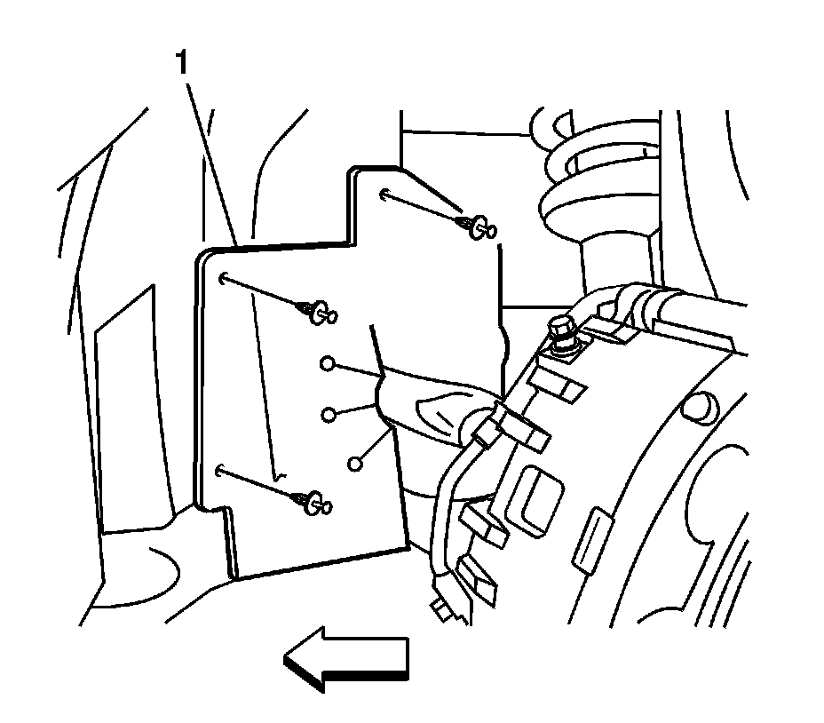
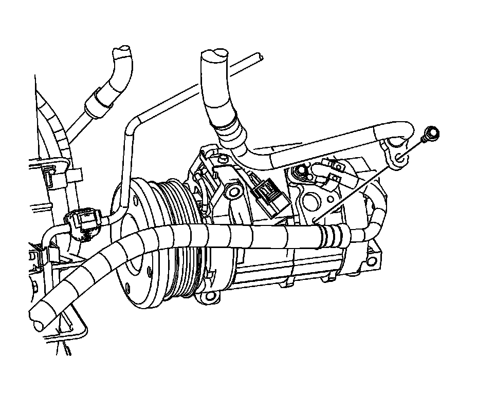
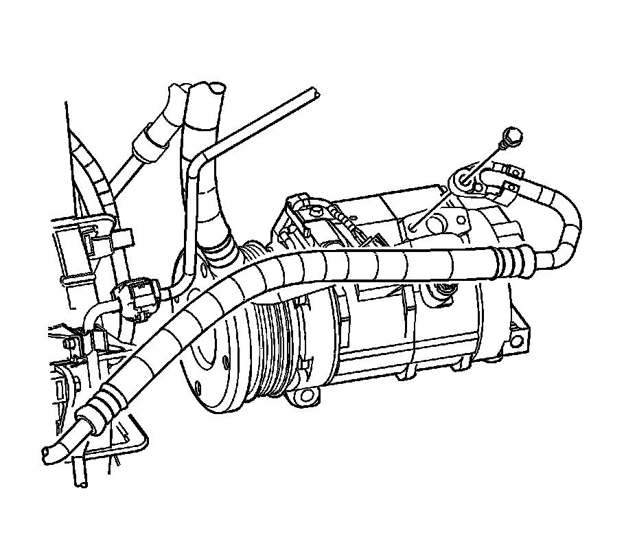
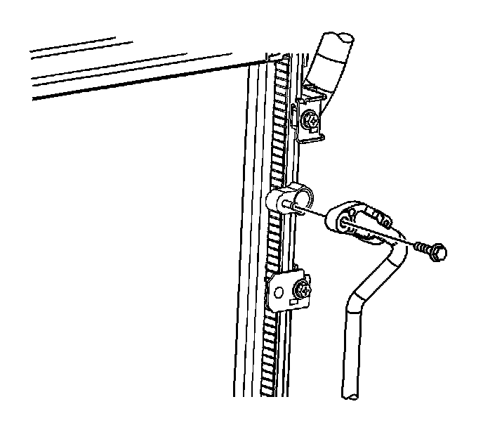

Discharge Hose Replacement (HD Cooling)
Discharge Hose Replacement (LH2 / HD Cooling)
Tools Required
J 39400-A Halogen Leak Detector
Removal Procedure
1. Recover the refrigerant. Refer to Refrigerant Recovery and Recharging (Refrigerant Recovery and Recharging) .
2. Raise and support the vehicle. Refer to Lifting and Jacking the Vehicle (Service and Repair) .
3. Remove the front air deflector retainers.

4. Remove the front air deflector.

5. Remove the LH front wheel. Refer to Tire and Wheel Removal and Installation (Service and Repair) .
6. Remove the LH front splash shield retainers.
7. Remove the LH front splash shield (1).

8. Remove the suction line bolt from the A/C compressor.
9. Disconnect the suction line from the A/C compressor.
10. Remove and discard the O-ring.

11. Remove the discharge line bolt from the A/C compressor.
12. Disconnect the discharge line from the A/C compressor.
13. Remove and discard the O-ring.

14. Remove the discharge line to condenser bolt.
15. Disconnect the discharge line from the condenser.
16. Remove and discard the O-ring.
17. Disconnect the push-pin retainer from the front bumper and reposition the air baffle aside.
18. Remove the discharge line.
Installation Procedure
1. Install the discharge line.
2. Connect the push-pin retainer to the front bumper.
3. Install a new O-ring to the discharge line at the condenser. Refer to O-Ring Replacement (Service and Repair) .
4. Connect the discharge line to the condenser.
Notice: Refer to Fastener Notice (Fastener Notice) .
5. Install the discharge line to condenser bolt.
Tighten the bolt to 9 N.m (80 lb in).
6. Install a new O-ring to the discharge line at the A/C compressor. Refer to O-Ring Replacement (Service and Repair) .
7. Connect the discharge line to the A/C compressor.
8. Install the discharge line bolt to the A/C compressor.
Tighten the bolt to 9 N.m (80 lb in).
9. Install a new O-ring to the suction line at the A/C compressor. Refer to O-Ring Replacement (Service and Repair) .
10. Connect the suction line to the A/C compressor.
11. Install the suction line bolt to the A/C compressor.
Tighten the bolt to 9 N.m (80 lb in).
12. Install the LH front splash shield (1).
13. Install the LH front splash shield retainers.
14. Install the LH front wheel. Refer to Tire and Wheel Removal and Installation (Service and Repair) .
15. Remove the front air deflector retainers.
16. Install the front air deflector.
17. Install the front air deflector retainers.
18. Lower the vehicle.
19. Evacuate and recharge the refrigerant system. Refer to Refrigerant Recovery and Recharging (Refrigerant Recovery and Recharging) .
20. Leak test the fittings of the component using J 39400-A .